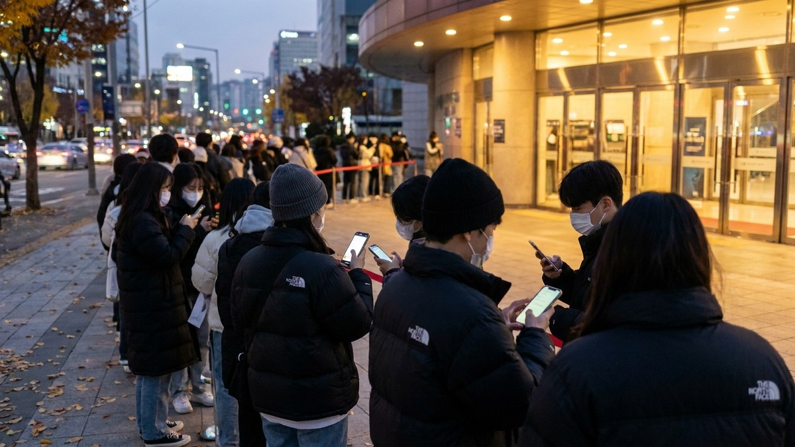
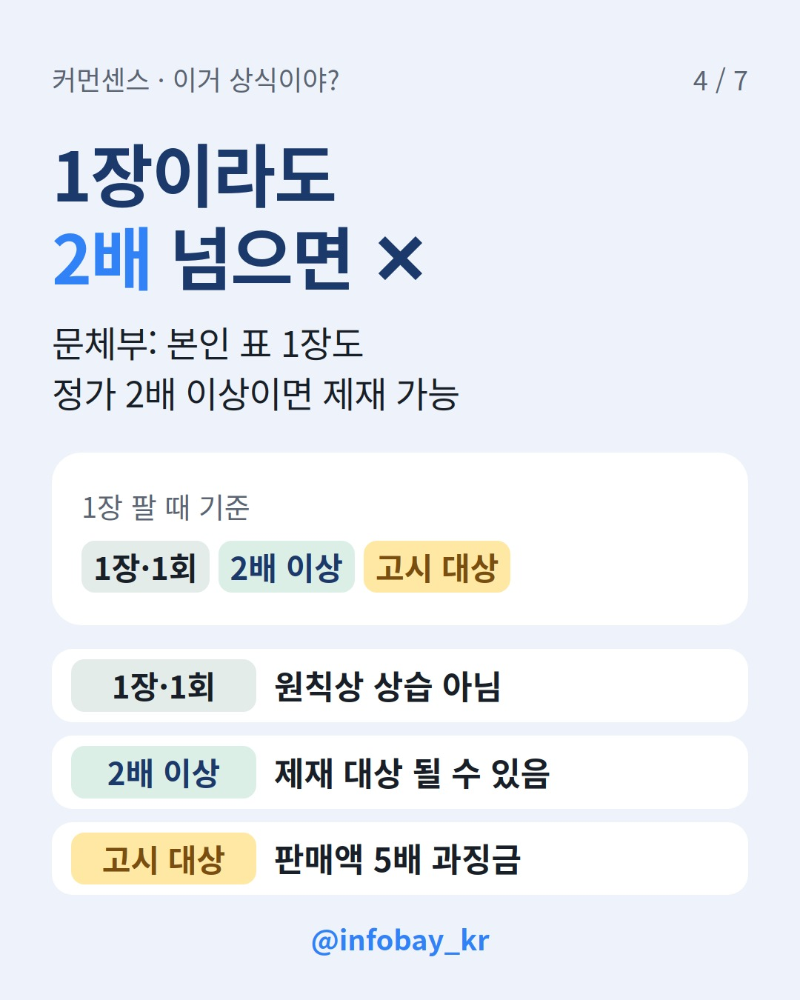

못 가게 된 콘서트 표, 정가에 넘기면 괜찮을까요? '수고비 5천원'만 붙여도 걸릴까요?
한 줄 결론: 산 값 그대로 한 번 넘기는 건 법이 말하는 '부정판매'가 아니에요. 다만 웃돈을 반복해서 받거나 본인 표 1장이라도 정가 2배 넘게 받으면 제재 대상이 될 수 있어요.

2026년 8월 28일, 개정 공연법과 국민체육진흥법이 시행됐어요. 예전에는 매크로(자동 예매 프로그램)를 썼다는 게 입증돼야 처벌할 수 있었어요. 이제는 매크로를 안 썼어도 공연·스포츠 입장권 부정거래는 금지예요.
그래서 "손으로 예매했으니 괜찮다"는 말은 이제 안 통해요. 직접 잡은 표도 조건이 맞으면 처벌 대상이에요.
법에 나오는 부정판매는 아래 세 가지를 모두 갖춘 경우예요.
하나라도 빠지면 '부정판매'로 보기 어려워요. 그래서 산 값 그대로나 더 싸게 넘기는 건 이 정의에 들지 않아요.
문체부는 1장을 한 번 판 경우는 원칙적으로 상습이나 영업으로 보기 어렵다고 설명했어요. 그렇다고 마음 놓으면 안 돼요.
'몇 번부터 상습인지'는 법에 숫자로 정해져 있지 않아요. 애매하면 웃돈을 안 붙이는 게 가장 안전해요.

안 돼요. 문체부가 10월에 수사를 의뢰한 170명 중에는 이른바 '변종 판매' 4명이 들어 있었어요. 수수료·수고비 명목으로 웃돈을 받거나 다른 상품을 끼워 판 경우예요.
문체부는 명목이 아니라 거래의 실질이 부정거래면 처벌할 수 있다고 봤어요. 법제처 자문도 거쳤다고 밝혔어요.
| 구분 | 내용 |
|---|---|
| 과징금 | 판매금액의 2배~최대 50배 (차등 부과) |
| 형벌 | 1년 이하 징역 또는 1천만원 이하 벌금 가능 |
| 부당이익 | 몰수·추징 가능 |
| 경기장 앞 현장 웃돈 판매 | 경범죄처벌법, 20만원 이하 벌금·구류·과료 |
| 신고포상금 | 부정구매 신고 최대 5천만원, 부정판매 신고는 과징금의 50% 안 |
네. 숫자로 보면 이래요.
| 상황 | 법 기준으로 보면 | 체크할 점 |
|---|---|---|
| 산 값 이하로 1번 양도 | 구입가 초과가 아니라 부정판매 요건에 안 들어요 | 예매처 양도·명의 규정 |
| 1장을 1번, 웃돈 조금 | 원칙상 상습·영업으로 보기 어려워요 | 고시되면 5배 과징금 가능 |
| 본인 표 1장, 정가 2배 이상 | 제재 대상이 될 수 있어요(문체부 관계자) | 웃돈 빼기 |
| 여러 장을 웃돈 받고 판매 | 상습·영업으로 볼 수 있어요 | 하지 않기 |
| 수고비·수수료·끼워팔기 | 명목 말고 실질로 판단해요 | 하지 않기 |
| 경기장·공연장 앞에서 웃돈 판매 | 경범죄처벌법 대상이에요 | 하지 않기 |
표 넘기기 전 체크리스트
Q. 영화 티켓도 똑같이 적용돼요?
A. 8월 시행 때 영화 입장권은 적용 대상에서 빠졌어요. 정부는 영화 쪽 법(영비법) 개정도 추진하겠다고 밝혔어요.
Q. 웃돈 주고 산 사람도 처벌받아요?
A. 개정법에서 말하는 부정구매는 되팔 목적으로 정해진 예매 절차를 피하거나 방해해서 표를 사는 거예요. 내 경우가 해당하는지 애매하면 변호사 상담을 받아 보세요.
Q. 암표를 보면 어디에 신고해요?
A. '공연 및 프로스포츠 암표 통합 신고 누리집'에서 온라인으로 신고할 수 있어요.
이 글은 일반 정보예요. 실제 사건은 사실관계에 따라 판단이 달라지니 법률 전문가와 상담하세요.
이 상황, 당신은? 못 가게 된 표, 정가에 넘겨도 된다 vs 취소가 맞다. 커먼센스에서 '인정/아닌데'로 투표하고 세대별 결과를 확인해 보세요.
*2026년 11월 기준, 문화체육관광부 발표와 관련 보도 확인.*